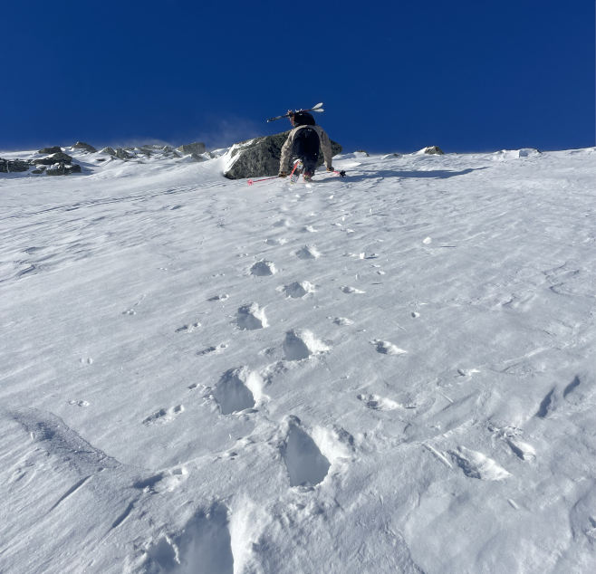

While these processes help build the deep snowpack in the ravine, they are also the source of the major risks within the ravine.
The first risk that comes to mind for most people is an avalanche. An avalanche is a mass of snow moving rapidly down a slope. Avalanches occur when weak layers within the snowpack fail on steep slopes (typically 30°–45°), often triggered by added weight from new snowfall, wind loading, or human activity. In spring, rapid warming can also create wet loose avalanches, where the snow surface weakens and loses cohesion as it becomes saturated, allowing it to slide easily downhill.
In the United States, avalanches kill roughly 25–30 people each winter and injure many more.
While there are many different types of avalanches, the most common on Mount Washington are wind slabs, formed by wind-deposited snow that creates dense, unstable layers, and wet loose avalanches, which are most frequent during the spring when warming temperatures destabilize the snowpack.
While avalanches remain a major hazard, the leading cause of injury and death in Tuckerman Ravine is long sliding falls. Every ski season, Mount Washington sees an average of about 25 life-threatening sliding incidents. Because of how quickly the weather can change, the snow surface can go from soft to firm—or even ice-over—in a matter of minutes, making it nearly impossible to stop once a fall begins.
As winter transitions to spring each year, warmer temperatures, stronger sunlight, and the shift from snow to rain create a new set of mountain hazards. Though the threat of avalanches begins to decrease, these springtime hazards are just as dangerous and have contributed to hundreds of accidents and near-misses over the years. Some of these hazards include Icefall & Rockfall, Glide Cracks/Crevasses, and undermined snow.